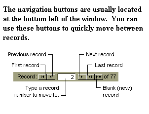

THE PATIENT PROFILER™
FREQUENTLY ASKED QUESTIONS
FAQ's
This page contains answers to common questions handled by our support staff. We have also included some tips and tricks that you may find useful and presented them here in the form of questions and answers. Click on one of these questions and answers hotspot keywords to jump down to the questions and answers section or use the vertical scroll bar on the right to scroll down.
Note: We will follow a few shorthand conventions for describing user-interface procedures. Key combinations will be presented as: Ctrl+Alt+Delete, which means that you should press and hold down the Control [Ctrl] key, the [Alt] key, and press the [Delete] key, ALL at the SAME TIME. Menu selections will be presented as: File->Open, which means that you should click the File menu, and then select the Open option. When a keyword or question is encountered in these documents the mouse pointer changes to a "hand and pointing finger." Clicking the mouse on one of the keywords will jump to an area that will supply further information pertaining to that topic. Alternatively, pressing the [Tab] key will jump through the document from one keyword to the next. Holding down the [Shift] key and pressing [Tab] will move through the document in the reverse direction. Pressing the [Enter] key while on one of the keywords will then jump to an area that will supply further information pertaining to that topic.
Why
should I use this program?
Can
I contact MJL Computers by email or telephone?
What should I do if the web page doesn't open completely and/or some of the pictures or icons are missing?
How do I get started?
I clicked the Desktop Icon but the program won’t open or run properly. What should I do?
What are Help Tips, Control Tips and Tool Tips?
How do I move from one record to the next in a Database or Table view?
How can I reset
information if I make a mistake before the changes are saved?
How can I delete a record?
When I entered a new record, one of the old records disappeared. What went wrong?
How can I make changes to the Drop Down Lists e.g. Name Titles, States, Postal Zip Codes, etc.?
Is there a calculator available while the program is running?
What should I do if suddenly I see one or more records that just display the word "#Deleted" in all of the fields?
How can I purchase a copy of "The Patient Profiler™" program?
Is "The Patient Profiler™" protected by copyright?
Does this program
contain disclaimers?
[Back to Top] [Index] [Questions]
Why should I use this program?
This program may be used to help increase business efficiency and efficacy. Utilizing this program may also help speed your cash flow while saving valuable staff time. There are several modules and databases available that can be customized to fit your needs. We will do whatever we can to adapt the program to your business needs as apposed to so-called "canned packages," "turn key programs," "store bought," or "off-the-shelf programs" that would require your business to conform to their program limitations. The Patient Profiler™ can track your patients, clients, insurance plans, addresses, telephone numbers, etc. It can also create, print and save customized lists that can to be used and reused to create, print and save recurring (weekly, monthly, quarterly, etc.) reports. Other customized reports can also be developed to monitor and supply specific information in formats that can be useful to your business and patient care.
[Back to Top] [Index] [Questions]
What should I do if the web page doesn't open completely and/or some of the pictures or icons are missing?
To view the latest version of the current web page, press the [F5] key at the top of the keyboard. Pressing [F5] will perform a "Reload "in Netscape Navigator or a "Refresh " in Internet Explorer.
[Back to Top] [Index] [Questions]
To start The Patient Profiler™ Program, click on the custom
icon that we created on your desktop. This will open the Main Menu page from where you can click on the appropriate button and select to open the:
Ø Inventory File,
Ø Client/Customer/Work Site Files, or
Ø Invoice Menu page.
The Invoice Menu will allow you to create and print either single invoices for point of sale activities, or develop lists to create and print recurring invoices.
[Back to Top] [Index] [Questions]
I clicked the Desktop Icon but the program won’t open or run properly. What should I do?
Most of our clients store the program(s) on their server(s). Sometimes a PC will have trouble copying a program into its local memory. It’s impossible to tell when or why it may happen, but the easiest way to remedy a local PC problem is to 'Shut Down' the PC completely and reboot. If the problem is only happening to that PC, rebooting should correct the situation.
Microsoft® Access automatically saves Access programs and database files whenever exited. If there is an interruption in electrical power or the system crashes while in use, only part of the program may get saved back to the server. Therefore, if other users are having similar problems when trying to run the program, the program stored on the server may have been corrupted.
If rebooting the PC doesn’t correct the situation, discontinue using the program and email Dr. Mike Jr. for assistance.
WARNING: If your version of the program contains a backup button or backup system, do NOT BACKUP if you believe there is a PROBLEM with the main server database or program. Backing up files when there is a problem will cause the bad information on the server to be copied to the backup file. You do not want the last good backup copy that was previously saved when the files were okay to now be overwritten, replaced and/or destroyed by bad data.
[Back to Top] [Index] [Questions]
What are Help Tips, Control Tips and Tool Tips?
Tips (sometimes referred to as Help/Control/Tool Tips) are yellow boxes that appear when the cursor is moved and/or left to rest over specific areas of the screen e.g. a button, text box, label, keyword, etc. The Microsoft® Windows program controls the behavior of the appearance and length of time the tip remains visible, so if the tip disappears and you wish to view it again, move the mouse pointer to another area of the screen and then back again. However, the actual message text that is displayed can often be set and/or changed by us. If the message is unclear or if you would like an additional Tip added as a reminder or explanation about the program, click here to contact M.J.L. Computers, Inc. and we will research and discuss what changes or new Tip(s) will be helpful.
[Back to Top] [Index] [Questions]
How do I move from one record to the next in a database or table view?
The navigation buttons are usually located at the bottom left of the window. You can use these buttons to quickly move between the First, Previous, Next, Last and Blank (New) records. Typing a number into the center window will jump to that record number. The far right arrow with a star [>*] will jump to the last i.e. blank record so that a new record can be added.

[Back to Top] [Index] [Questions]
How do I SAVE additions or changes I make when in the Database or Table views?
When you start to add a new record or make a change to an existing record in a datasheet or table, Microsoft® Access displays a pencil icon in the far left column. Microsoft® Access automatically saves the record you are adding or editing as soon as you move the insertion point (mouse pointer) to a different record, or close the form or datasheet you are working on. Once the edit has been saved, the pencil icon will disappear.
[Back to Top] [Index] [Questions]
How can I reset information if I make a mistake before the changes are saved?
When the user presses the escape [ESC] key before a save has been performed (and the pencil icon is still displayed in a database or table far left column), the original data will be restored and any changes or mistakes just made will be replaced. The escape [ESC] key is usually located in the top left corner of the keyboard. Once a mistake has been saved, the correct information must be reentered by you and can no longer be retrieved or undone from the database.
[Back to Top] [Index] [Questions]
For security reasons you don't want to make it to convenient for people to learn how to wipe out data! Even "Old Records" are usually just moved out of the way and saved someplace else rather than actually deleted.
Deleting records should normally be a supervisory function and should be limited to deleting one record at a time.
If the "record" entered has NOT been SAVED, pressing [Esc] will set the record back to a blank screen. If the record has already been saved, pressing [Esc] will set what was just typed back to the last saved version of that record. The [Esc] Escape Key is usually the Top Left Key on most Keyboards.
Once a record has been saved, the "easiest and safest way to delete" the record is to type new data over what's there. So open the bad record and then just keep changing or deleting whatever is in each field until the new record is completed and the data for one to be deleted is entirely overwritten.
In this way you are only affecting one record at a time and don't have to worry about deleting multiple records if the wrong keys are pressed.
[Back to Top] [Index] [Questions]
When I entered a new record, one of the old records disappeared. What went wrong?
Rather than just entering the new record, you may have overwritten an existing record. When adding a new record you must be on a new blank space in the database file. Otherwise, if you are still on an existing record, you will be replacing the existing information with the new data being entered.
- Whenever you enter a new record make sure that you are in the last blank record:
- Ø If you are in a spreadsheet view, use the Navigation Button that looks like an "arrow facing right pointing to a star" [>*].
- Ø If you are in a Form View that only shows one record at a time, then make sure that you navigate to the last blank record on file.
[Back to Top] [Index] [Questions]
How do I make changes to the Drop Down Lists e.g. Name Titles, States, Postal Zip Codes, etc.?
Changes can be made to add, delete, or edit the information shown when the down arrows are clicked to display a list of available choices e.g. for a list of States. Click on the Top Menu Bar Button labeled [Switchboard]. Then Click on the appropriate button for the list to be edited.
[Back to Top] [Index] [Questions]
Is there a calculator available while the program is running?
Yes. The program menu bar contains an option to open the calculator. The results from the calculator can be copied and pasted into The Patient Profiler™ program. Once the calculator is opened, it can be minimized by clicking the [-] in the upper right corner of the calculator and then restored from the bottom task bar for use in another program, window, or screen. If the calculator is minimized, it will remain available for your use on the bottom task bar even after "The Patient Profiler™ Program" is closed. Clicking the [X] in the upper right corner of the calculator closes the calculator.
[Back to Top] [Index] [Questions]
What should I do if suddenly I see one or more records that just display the word "#Deleted" in all of the fields?
If another user deletes one or more records while you have the database opened, any records deleted by them will show up on your screen with the word "#Deleted" in all of the fields. In addition, if your version of The Patient Profiler™ Program includes a Database Maintenance Subroutine, the word "#Deleted" will suddenly appear in all of the fields of any records deleted by someone activating the Database Maintenance Subroutine while you have one of the database files open. (See illustration below.) This is only a temporary situation and the screens will automatically correct themselves when refreshed. To remedy this situation, close the screen you are working in and go back to the [Main Program Menu]. Then click the appropriate button(s) to return to where you just left off. The screen and the file will now be refreshed and the words "#Deleted" will be gone (unless more records continue to be deleted). If the word "#Deleted" is still being displayed, you can close down the program and wait for the other user(s) to finish deleting records. However, since Microsoft® states that the database will not be adversely affected you can continue to use the database, but obviously you will not be able to access any records deleted.
NOTE: If no one else should have permission to delete records in your database, you may have a serious security and/or database problem that should immediately be reported so that remedial action can be instituted.

[Back to Top] [Index] [Questions]
How can I purchase a copy of "The Patient Profiler™" program?
This program is not for sale. Annual leasing arrangements are available from M.J.L. Computer Enterprises, Inc. Upon expiration, a screen message will be displayed and the program will cease to function.
[Back to Top] [Index] [Questions]
Is "The Patient Profiler™" protected by copyright?
Copyright © 1999 MJL Computer Enterprises, Inc. All rights reserved. All data and information on this program are protected under all applicable copyright laws. No use of any data or information is permitted in any form or manner without express written consent.
[Back to Top] [Index] [Questions]
Does this program contain disclaimers?
The author and distributors of this Program assume no responsibility for its suitability or use. It is provided 'as-is' without warranty of any kind, either expressed or implied, including but not limited to the warranties of merchantability and/or fitness for a particular purpose. The user assumes the entire risk as to the accuracy and the use of this program and any data prepared thereby.
[Back to Top] [Index] [Questions]
Can I contact MJL Computers by email or telephone?
You may also obtain technical support by calling 1-(631) 281-8791 and/or emailing drmikejr@hotmail.com.
Simply click on my email address above and a pre-addressed blank message form will open.
The Patient Profiler™ and the MJL Logo™ are trademarks of M.J.L. Computer Enterprises, Inc. All other products mentioned are registered trademarks or trademarks of their respective companies.
Questions or problems regarding this web site should be directed to
drmikejr@hotmail.com or visit our web sites by clicking one of our buttons on the menu bar at the top of this page.
Copyright © 1996 MJL Computer Enterprises, Inc. All rights reserved.
Last modified: 11/03/2002.